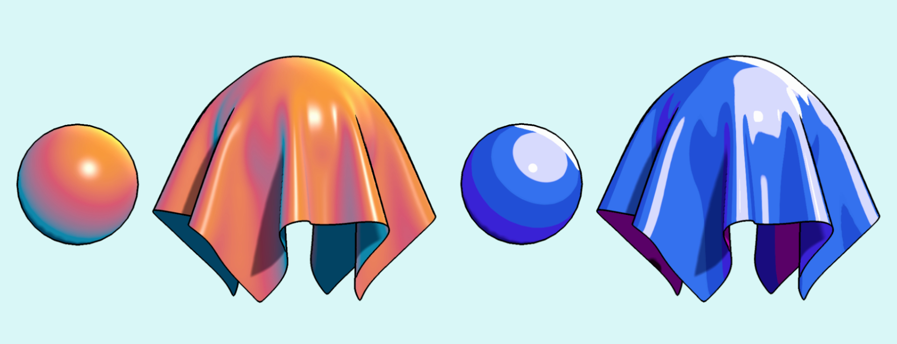

셰이더는 기본적으로 Half Lambert + Blinn-Phong + Fresnel + Outline으로
이루어져 있다.
좌측은3개의 색상을 사용하여 gradient를 만든 예시이다. 우측은 Ramp Texture를 기반으로 한 셰이더이며 highlight, rim 부분을 Pow와 Smoothstep을 활용하여 날카롭게 만들어주 었다.
다음 과제는 SRP를 활용하여 Normal과 Depth가 사용된 outline을 구현하는 것이다.
△